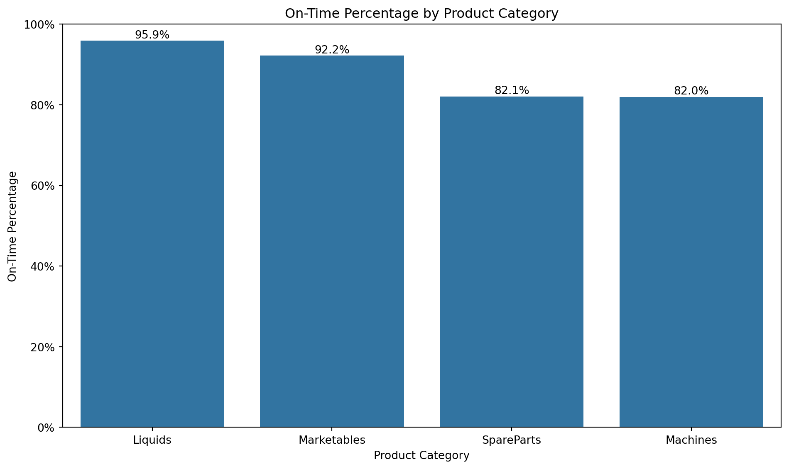

Complete all discussion questions for the seven mental models (plus some extra requirements for higher grades)
Important🎯 Note on Python Usage
Recommended Workflow: Use Your Existing Virtual Environment If you completed the Tech Setup Challenge Part 2, you already have a virtual environment set up! Here’s how to use it for this new challenge:
Clone this new challenge repository (see Getting Started section below)
Open the cloned repository in Cursor
Set this project to use your existing Python interpreter:
Press Ctrl+Shift+P → “Python: Select Interpreter”
Navigate to and choose the interpreter from your existing virtual environment (e.g., your-previous-project/venv/Scripts/python.exe)
Activate the environment in your terminal:
Open terminal in Cursor (`Ctrl + ``)
Navigate to your previous project folder where you have the venv folder
💡 Pro tip: You can quickly navigate by typing cd followed by dragging the folder from your file explorer into the terminal
Activate using the appropriate command for your system:
Windows Command Prompt:venv\Scripts\activate
Windows PowerShell:.\venv\Scripts\Activate.ps1
Mac/Linux:source venv/bin/activate
You should see (venv) at the beginning of your terminal prompt
Install additional packages if needed:pip install pandas numpy matplotlib seaborn
Warning⚠️ Cloud Storage Warning
Avoid using Google Drive, OneDrive, or other cloud storage for Python projects! These services can cause issues with: - Package installations failing due to file locking - Virtual environment corruption - Slow performance during pip operations
Best practice: Keep your Python projects in a local folder like C:\Users\YourName\Documents\ or ~/Documents/ instead of cloud-synced folders.
Alternative: Create a New Virtual Environment If you prefer a fresh environment, follow the Quarto documentation: https://quarto.org/docs/projects/virtual-environments.html. Be sure to follow the instructions to activate the environment, set it up as your default Python interpreter for the project, and install the necessary packages (e.g. pandas) for this challenge. For installing the packages, you can use the pip install -r requirements.txt command since you already have the requirements.txt file in your project. Some steps do take a bit of time, so be patient.
Why This Works: Virtual environments are portable - you can use the same environment across multiple projects, and Cursor automatically activates it when you select the interpreter!
The Problem: Mastering Data Manipulation Through Method Chaining
Core Question: How can we efficiently manipulate datasets using pandas method chaining to answer complex business questions?
The Challenge: Real-world data analysis requires combining multiple data manipulation techniques in sequence. Rather than creating intermediate variables at each step, method chaining allows us to write clean, readable code that flows logically from one operation to the next.
Our Approach: We’ll work with ZappTech’s shipment data to answer critical business questions about service levels and cross-category orders, using the seven mental models of data manipulation through pandas method chaining.
Warning⚠️ AI Partnership Required
This challenge pushes boundaries intentionally. You’ll tackle problems that normally require weeks of study, but with Cursor AI as your partner (and your brain keeping it honest), you can accomplish more than you thought possible.
The new reality: The four stages of competence are Ignorance → Awareness → Learning → Mastery. AI lets us produce Mastery-level work while operating primarily in the Awareness stage. I focus on awareness training, you leverage AI for execution, and together we create outputs that used to require years of dedicated study.
The Seven Mental Models of Data Manipulation
The seven most important ways we manipulate datasets are:
Assign: Add new variables with calculations and transformations
Subset: Filter data based on conditions or select specific columns
Drop: Remove unwanted variables or observations
Sort: Arrange data by values or indices
Aggregate: Summarize data using functions like mean, sum, count
Merge: Combine information from multiple datasets
Split-Apply-Combine: Group data and apply functions within groups
Data and Business Context
We analyze ZappTech’s shipment data, which contains information about product deliveries across multiple categories. This dataset is ideal for our analysis because:
Real Business Questions: CEO wants to understand service levels and cross-category shopping patterns
Multiple Data Sources: Requires merging shipment data with product category information
Complex Relationships: Service levels may vary by product category, and customers may order across categories
Method Chaining Practice: Perfect for demonstrating all seven mental models in sequence
Data Loading and Initial Exploration
Let’s start by loading the ZappTech shipment data and understanding what we’re working with.
import pandas as pdimport numpy as npimport matplotlib.pyplot as pltimport seaborn as snsfrom datetime import datetime, timedelta# Load the shipment datashipments_df = pd.read_csv("https://raw.githubusercontent.com/flyaflya/persuasive/main/shipments.csv", parse_dates=['plannedShipDate', 'actualShipDate'])# Load product line dataproduct_line_df = pd.read_csv("https://raw.githubusercontent.com/flyaflya/persuasive/main/productLine.csv")# Reduce dataset size for faster processing (4,000 rows instead of 96,805 rows)shipments_df = shipments_df.head(4000)print("Shipments data shape:", shipments_df.shape)print("\nShipments data columns:", shipments_df.columns.tolist())print("\nFirst few rows of shipments data:")print(shipments_df.head(10))print("\n"+"="*50)print("Product line data shape:", product_line_df.shape)print("\nProduct line data columns:", product_line_df.columns.tolist())print("\nFirst few rows of product line data:")print(product_line_df.head(10))
Shipments Data: Contains individual line items for each shipment, including: - shipID: Unique identifier for each shipment - partID: Product identifier - plannedShipDate: When the shipment was supposed to go out - actualShipDate: When it actually shipped - quantity: How many units were shipped
Product Category and Line Data: Contains product category information: - partID: Links to shipments data - productLine: The category each product belongs to - prodCategory: The category each product belongs to
Business Questions We’ll Answer: 1. Does service level (on-time shipments) vary across product categories? 2. How often do orders include products from more than one category?
The Seven Mental Models: A Progressive Learning Journey
Now we’ll work through each of the seven mental models using method chaining, starting simple and building complexity.
1. Assign: Adding New Variables
Mental Model: Create new columns with calculations and transformations.
Let’s start by calculating whether each shipment was late:
Why use lambda df:? When chaining methods, we need to reference the current state of the dataframe. The lambda df: tells pandas “use the current dataframe in this calculation.” Without it, pandas would look for a variable called df that doesn’t exist.
Alternative approach: You could also write this as separate steps, but method chaining keeps related operations together and makes the code more readable.
Important🤔 Discussion Questions: Assign Mental Model
Question 1: Data Types and Date Handling
Simple assignment - calculate if shipment was late
Briefly Give Answers to the Discussion Questions In This Section
What is the dtype of the actualShipDate series? How can you find out using code?
Answer :
The dtype of the actualShipDate series is datetime64[ns].It represents dates and times with nanosecond precision. We can find out using below code by printing the dtype of the actualShipDate series.
print(shipments_df['actualShipDate'].dtype)
datetime64[ns]
Why is it important that both actualShipDate and plannedShipDate have the same data type for comparison?
Having the same data type for actualShipDate and plannedShipDate is crucial for accurate comparison. When dates are stored as datetime objects, Python can correctly compare them chronologically. For example, datetime(2025, 11, 4) is correctly identified as later than datetime(2024, 5, 20). Unlike strings, numerical representations of dates and times inherently support chronological ordering, ensuring comparisons yield correct results.
However, if dates are stored as strings with different formats (e.g., “04-11-2025” and “05-20-2024”), a simple string comparison might yield unintuitive results. Comparing “04-11-2025” and “05-20-2024” as strings would result in “04-11-2025” being considered “less than” “05-20-2024” because ‘04’ comes before ‘05’ alphabetically. This is incorrect chronologically. Therefore, consistent datetime objects ensure that comparisons reflect the actual temporal order of the dates.
Answer:
We can find out using below code by printing the dtype of the actualShipDate and plannedShipDate series.
Question 2: String vs Date Comparison - Can you give an example where comparing two dates as strings would yield unintuitive results, e.g. what happens if you try to compare “04-11-2025” and “05-20-2024” as strings vs as dates?
Answer:
Comparing two dates as strings would yield unintuitive results, e.g. what happens if you try to compare “04-11-2025” and “05-20-2024” as strings vs as dates? from datetime import datetime
date_string1 ="04-11-2025"date_string2 ="05-20-2024"# Comparing as stringsprint(f"Comparing '{date_string1}' and '{date_string2}' as strings:")print(f"'{date_string1}' < '{date_string2}': {date_string1 < date_string2}")# Converting to datetime objects and comparingdate_datetime1 = datetime.strptime(date_string1, "%m-%d-%Y")date_datetime2 = datetime.strptime(date_string2, "%m-%d-%Y")print(f"\nComparing {date_datetime1} and {date_datetime2} as datetime objects:")print(f"{date_datetime1} < {date_datetime2}: {date_datetime1 < date_datetime2}")
Comparing '04-11-2025' and '05-20-2024' as strings:
'04-11-2025' < '05-20-2024': True
Comparing 2025-04-11 00:00:00 and 2024-05-20 00:00:00 as datetime objects:
2025-04-11 00:00:00 < 2024-05-20 00:00:00: False
Question 3: Debug This Code
# This code has an error - can you spot it?shipments_with_lateness = ( shipments_df .assign( is_late=lambda df: df['actualShipDate'] > df['plannedShipDate'], days_late=lambda df: (df['actualShipDate'] - df['plannedShipDate']).dt.days, lateStatement=lambda df: df['is_late'].map({True: "Darn Shipment is Late", False: "Shipment is on Time"}) ))
What’s wrong with the lateStatement assignment and how would you fix it?
Answer:
The lateStatement assignment is wrong because the is_late column is a boolean series, not a single boolean value. We need to use the all() method to check if all values in the is_late column are True.
Added lateness calculations:
shipID plannedShipDate actualShipDate is_late days_late \
0 10001 2013-11-06 2013-10-04 False -33
1 10002 2013-10-15 2013-10-04 False -11
2 10003 2013-10-25 2013-10-07 False -18
3 10004 2013-10-14 2013-10-08 False -6
4 10005 2013-10-14 2013-10-08 False -6
lateStatement
0 Shipment is on Time
1 Shipment is on Time
2 Shipment is on Time
3 Shipment is on Time
4 Shipment is on Time
2. Subset: Querying Rows and Filtering Columns
Mental Model: Query rows based on conditions and filter to keep specific columns.
Let’s query for only late shipments and filter to keep the columns we need:
# Query rows for late shipments and filter to keep specific columnslate_shipments = ( shipments_with_lateness .query('is_late == True') # Query rows where is_late is True .filter(['shipID', 'partID', 'plannedShipDate', 'actualShipDate', 'days_late']) # Filter to keep specific columns)print(f"Found {len(late_shipments)} late shipments out of {len(shipments_with_lateness)} total")print("\nLate shipments sample:")print(late_shipments.head())
Found 456 late shipments out of 4000 total
Late shipments sample:
shipID partID plannedShipDate actualShipDate days_late
776 10192 part0164a70 2013-10-09 2013-10-14 5
777 10192 part9259836 2013-10-09 2013-10-14 5
778 10192 part4526c73 2013-10-09 2013-10-14 5
779 10192 partbb47e81 2013-10-09 2013-10-14 5
780 10192 part008482f 2013-10-09 2013-10-14 5
Note🔍 Understanding the Methods
.query(): Query rows based on conditions (like SQL WHERE clause)
.filter(): Filter to keep specific columns by name
Alternative: You could use .loc[] for more complex row querying, but .query() is often more readable
Important🤔 Discussion Questions: Subset Mental Model
Briefly Give Answers to the Discussion Questions In This Section
Question 1: Query vs Boolean Indexing - What’s the difference between using .query('is_late == True') and [df['is_late'] == True]?
Answer:
The difference between using .query('is_late == True') and [df['is_late'] == True] is that .query() is a more readable way to query rows based on conditions. It is more readable because it is a more natural way to express the condition.
shipID plannedShipDate actualShipDate partID quantity is_late \
776 10192 2013-10-09 2013-10-14 part0164a70 2 True
777 10192 2013-10-09 2013-10-14 part9259836 1 True
778 10192 2013-10-09 2013-10-14 part4526c73 1 True
779 10192 2013-10-09 2013-10-14 partbb47e81 2 True
780 10192 2013-10-09 2013-10-14 part008482f 1 True
... ... ... ... ... ... ...
3896 10956 2013-09-24 2013-10-15 part98c1c48 1 True
3897 10956 2013-09-24 2013-10-15 part82e69e9 1 True
3898 10956 2013-09-24 2013-10-15 partf23fd1e 2 True
3899 10956 2013-09-24 2013-10-15 part825873c 1 True
3997 11001 2013-10-04 2013-10-15 partd4952a8 1 True
days_late lateStatement
776 5 Darn Shipment is Late
777 5 Darn Shipment is Late
778 5 Darn Shipment is Late
779 5 Darn Shipment is Late
780 5 Darn Shipment is Late
... ... ...
3896 21 Darn Shipment is Late
3897 21 Darn Shipment is Late
3898 21 Darn Shipment is Late
3899 21 Darn Shipment is Late
3997 11 Darn Shipment is Late
[456 rows x 8 columns]
shipID plannedShipDate actualShipDate partID quantity is_late \
776 10192 2013-10-09 2013-10-14 part0164a70 2 True
777 10192 2013-10-09 2013-10-14 part9259836 1 True
778 10192 2013-10-09 2013-10-14 part4526c73 1 True
779 10192 2013-10-09 2013-10-14 partbb47e81 2 True
780 10192 2013-10-09 2013-10-14 part008482f 1 True
... ... ... ... ... ... ...
3896 10956 2013-09-24 2013-10-15 part98c1c48 1 True
3897 10956 2013-09-24 2013-10-15 part82e69e9 1 True
3898 10956 2013-09-24 2013-10-15 partf23fd1e 2 True
3899 10956 2013-09-24 2013-10-15 part825873c 1 True
3997 11001 2013-10-04 2013-10-15 partd4952a8 1 True
days_late lateStatement
776 5 Darn Shipment is Late
777 5 Darn Shipment is Late
778 5 Darn Shipment is Late
779 5 Darn Shipment is Late
780 5 Darn Shipment is Late
... ... ...
3896 21 Darn Shipment is Late
3897 21 Darn Shipment is Late
3898 21 Darn Shipment is Late
3899 21 Darn Shipment is Late
3997 11 Darn Shipment is Late
[456 rows x 8 columns]
Which approach is more readable and why?
Answer:
The approach that is more readable is .query('is_late == True') because it is a more natural way to express the condition.
Question 2: Additional Row Querying - Can you show an example of using a variable like late_threshold to query rows for shipments that are at least late_threshold days late, e.g. what if you wanted to query rows for shipments that are at least 5 days late?
# Define a late thresholdlate_threshold =5# Query for shipments that are at least the late_threshold days latelate_shipments = shipments_with_lateness[shipments_with_lateness['days_late'] >= late_threshold]print(f"Shipments that are at least {late_threshold} days late:")print(late_shipments[['shipID', 'plannedShipDate', 'actualShipDate', 'days_late', 'lateStatement']].head())
Shipments that are at least 5 days late:
shipID plannedShipDate actualShipDate days_late lateStatement
776 10192 2013-10-09 2013-10-14 5 Darn Shipment is Late
777 10192 2013-10-09 2013-10-14 5 Darn Shipment is Late
778 10192 2013-10-09 2013-10-14 5 Darn Shipment is Late
779 10192 2013-10-09 2013-10-14 5 Darn Shipment is Late
780 10192 2013-10-09 2013-10-14 5 Darn Shipment is Late
3. Drop: Removing Unwanted Data
Mental Model: Remove columns or rows you don’t need.
Let’s clean up our data by removing unnecessary columns:
# Create a cleaner dataset by dropping unnecessary columnsclean_shipments = ( shipments_with_lateness .drop(columns=['quantity']) # Drop quantity column (not needed for our analysis) .dropna(subset=['plannedShipDate', 'actualShipDate']) # Remove rows with missing dates)print(f"Cleaned dataset: {len(clean_shipments)} rows, {len(clean_shipments.columns)} columns")print("Remaining columns:", clean_shipments.columns.tolist())
Important🤔 Discussion Questions: Drop Mental Model
Briefly Give Answers to the Discussion Questions In This Section
Question 1: Drop vs Filter Strategies - What’s the difference between .drop(columns=['quantity']) and .filter() with a list of columns you want to keep?
Answer:
The difference between .drop(columns=['quantity']) and .filter() with a list of columns you want to keep is that .drop(columns=['quantity']) drops the quantity column from the dataframe, while .filter() keeps the quantity column in the dataframe.
When would you choose to drop columns vs filter to keep specific columns?
Question 2: Handling Missing Data - What happens if you use .dropna() without specifying subset? How is this different from .dropna(subset=['plannedShipDate', 'actualShipDate'])?
Answer:
The pandas DataFrame.dropna() method is used to remove missing values (NaN) from a DataFrame. The behavior of this method changes significantly depending on whether the subset argument is used.
When dropna() is called without the subset argument, it examines every cell in each row of the DataFrame. If any cell in a row contains a missing value, the entire row is removed from the DataFrame. This is the default behavior and can be a quick way to remove any incomplete data, but it can also lead to substantial data loss if missing values are present in columns that are not critical to the specific analysis being performed.
.dropna() without specifying subset: This is like saying, “If any cell in a row is empty, get rid of the whole row.” This can remove a lot of rows, even if only one cell in a row is empty and the other information in that row is useful.
.dropna(subset=[‘plannedShipDate’, ‘actualShipDate’]): This is like saying, “Only get rid of a row if a cell in the ‘plannedShipDate’ column or the ‘actualShipDate’ column is empty.” If cells in other columns are empty, but these two date columns are filled, the row is kept.
Code Example:
import pandas as pdimport numpy as npdata = {'col1': [1, 2, np.nan, 4, 5],'col2': [6, np.nan, 8, 9, 10],'col3': [11, 12, 13, np.nan, 15]}df = pd.DataFrame(data)print("Original DataFrame:")print(df)# Using dropna() with subset, checking only 'col2' and 'col3'df_dropped_subset = df.dropna(subset=['col2', 'col3'])print("\nDataFrame after dropna() with subset=['col2', 'col3']:")print(df_dropped_subset)
Original DataFrame:
col1 col2 col3
0 1.0 6.0 11.0
1 2.0 NaN 12.0
2 NaN 8.0 13.0
3 4.0 9.0 NaN
4 5.0 10.0 15.0
DataFrame after dropna() with subset=['col2', 'col3']:
col1 col2 col3
0 1.0 6.0 11.0
2 NaN 8.0 13.0
4 5.0 10.0 15.0
- Why might you want to be selective about which columns to check for missing values?
Answer:
We might want to be selective about which columns to check for missing values because it can save time and memory. If we only need to check a few columns for missing values, we can do that instead of checking all columns.
4. Sort: Arranging Data
Mental Model: Order data by values or indices.
Let’s sort by lateness to see the worst offenders:
# Sort by days late (worst first)sorted_by_lateness = ( clean_shipments .sort_values('days_late', ascending=False) # Sort by days_late, highest first .reset_index(drop=True) # Reset index to be sequential)print("Shipments sorted by lateness (worst first):")print(sorted_by_lateness[['shipID', 'partID', 'days_late', 'is_late']].head(10))
Important🤔 Discussion Questions: Sort Mental Model
Briefly Give Answers to the Discussion Questions In This Section
Question 1: Sorting Strategies - What’s the difference between ascending=False and ascending=True in sorting?
Answer: ### ascending=False vs ascending=True
When we use the sort_values() method in pandas to sort a DataFrame by one or more columns, the ascending parameter controls the order of the sorting:
ascending=True (which is the default) sorts the values in ascending order (from smallest to largest, A to Z, oldest to newest).
ascending=False sorts the values in descending order (from largest to smallest, Z to A, newest to oldest).
How would you sort by multiple columns (e.g., first by is_late, then by days_late)?
Answer: ### Sorting by Multiple Columns
To sort by multiple columns, we provide a list of column names to the by argument in sort_values(). Pandas will then sort by the first column in the list, and for rows that have the same value in the first column, it will use the second column for sorting, and so on. We can also specify the sorting order (ascending or descending) for each column individually by providing a list of boolean values to the ascending argument, corresponding to the order of columns in the by list.
Sample Code
# Example 1: Sorting by days_late in ascending orderprint("Sorting by days_late (ascending):")sorted_ascending = shipments_with_lateness.sort_values(by='days_late', ascending=True)print(sorted_ascending[['shipID', 'days_late']].head())print("\n"+"="*50+"\n")# Example 2: Sorting by days_late in descending orderprint("Sorting by days_late (descending):")sorted_descending = shipments_with_lateness.sort_values(by='days_late', ascending=False)print(sorted_descending[['shipID', 'days_late']].head())print("\n"+"="*50+"\n")# Example 3: Sorting by multiple columns - first by is_late (False then True), then by days_late (ascending)# is_late is boolean, False comes before True in ascending order.print("Sorting by is_late (ascending), then by days_late (ascending):")sorted_multi = shipments_with_lateness.sort_values(by=['is_late', 'days_late'], ascending=[True, True])print(sorted_multi[['shipID', 'is_late', 'days_late', 'lateStatement']].head(10))
Sorting by days_late (ascending):
shipID days_late
0 10001 -33
293 10059 -25
292 10059 -25
291 10059 -25
297 10059 -25
==================================================
Sorting by days_late (descending):
shipID days_late
3882 10956 21
3892 10956 21
3891 10956 21
3889 10956 21
3888 10956 21
==================================================
Sorting by is_late (ascending), then by days_late (ascending):
shipID is_late days_late lateStatement
0 10001 False -33 Shipment is on Time
289 10059 False -25 Shipment is on Time
290 10059 False -25 Shipment is on Time
291 10059 False -25 Shipment is on Time
292 10059 False -25 Shipment is on Time
293 10059 False -25 Shipment is on Time
294 10059 False -25 Shipment is on Time
295 10059 False -25 Shipment is on Time
296 10059 False -25 Shipment is on Time
297 10059 False -25 Shipment is on Time
Question 2: Index Management - Why do we use .reset_index(drop=True) after sorting?
Answer:
When we sort a DataFrame, the original index of the rows stays attached to those rows. This means that even though the rows are now in a new order, their original index values are still associated with them.
Using .reset_index(drop=True) does two things:
reset_index(): It replaces the current index with a default integer index starting from 0. drop=True: This is crucial. If we didn’t include drop=True, the original index would be added as a new column in the DataFrame. By setting drop=True, we tell pandas to discard the original index instead of turning it into a column. Why do this after sorting?
Clean Integer Index: Sorting changes the order of the rows, but the original index doesn’t reflect this new order. Resetting the index provides a clean, sequential integer index (0, 1, 2, …) that matches the new order of the rows. This is often more intuitive and easier to work with, especially if you plan to do further operations that rely on positional indexing. Avoiding Confusion: Keeping the old index after sorting can be confusing. For example, if you sort a DataFrame and then try to access a row using its original index value, you might not get the row you expect in the new sorted order. Preparation for Further Operations: Some pandas operations work best with a standard integer index. Resetting the index after sorting ensures the DataFrame is in a good state for these operations.
What happens to the original index when you sort? Why might this be problematic?
Answer:
The original index values move along with the data rows they were associated with. The order of the index values will no longer be sequential (0, 1, 2, …) if it was before, but instead will reflect the original positions of the rows in the unsorted DataFrame.
Why might this be problematic?
Answer:
Keeping the original index after sorting can be problematic for a few reasons:
Mismatch between Position and Index Label: The most common issue is that the index label no longer corresponds to the position of the row in the sorted DataFrame. If you try to access a row using its original index label (e.g., using .loc[]), you will get the data from the row that originally had that index, which might now be located at a completely different position in the sorted DataFrame. Confusion with Positional Indexing: If you’re used to using default integer-based positional indexing (e.g., using .iloc[0] to get the first row), this will still work, but the index label displayed for that row will be the original index label, which can be confusing as it doesn’t reflect its current position. Unexpected Behavior in Subsequent Operations: Some pandas operations assume or work best with a standard, sequential integer index. If you perform these operations on a sorted DataFrame with a non-sequential original index, you might encounter unexpected behavior or errors. Difficulty in Slicing by Label: If your original index was meaningful (e.g., timestamps or IDs), sorting disrupts the sequential nature of that index. This can make it harder to perform operations that rely on sequential index slicing or range selection using .loc[].
5. Aggregate: Summarizing Data
Mental Model: Calculate summary statistics across groups or the entire dataset.
Let’s calculate overall service level metrics:
# Calculate overall service level metricsservice_metrics = ( clean_shipments .agg({'is_late': ['count', 'sum', 'mean'], # Count total, count late, calculate percentage'days_late': ['mean', 'max'] # Average and maximum days late }) .round(3))print("Overall Service Level Metrics:")print(service_metrics)# Calculate percentage on-time directly from the dataon_time_rate = (1- clean_shipments['is_late'].mean()) *100print(f"\nOn-time delivery rate: {on_time_rate:.1f}%")
Overall Service Level Metrics:
is_late days_late
count 4000.000 NaN
sum 456.000 NaN
mean 0.114 -0.974
max NaN 21.000
On-time delivery rate: 88.6%
Important🤔 Discussion Questions: Aggregate Mental Model
Briefly Give Answers to the Discussion Questions In This Section
Question 1: Boolean Aggregation - Why does sum() work on boolean values? What does it count?
Answer : The sum() function works on boolean values by counting the number of True values in the boolean series. It counts the number of True values in the boolean series.
6. Merge: Combining Information
Mental Model: Join data from multiple sources to create richer datasets.
Now let’s analyze service levels by product category. First, we need to merge our data:
# Merge shipment data with product line datashipments_with_category = ( clean_shipments .merge(product_line_df, on='partID', how='left') # Left join to keep all shipments .assign( category_late=lambda df: df['is_late'] & df['prodCategory'].notna() # Only count as late if we have category info ))print("\nProduct categories available:")print(shipments_with_category['prodCategory'].value_counts())
Important🤔 Discussion Questions: Merge Mental Model
Question 1: Join Types and Data Loss - Why does your professor think we should use how='left' in most cases?
Briefly Give Answers to the Discussion Questions In This Section
Answer: Professor likely recommends using how=‘left’ in most cases because a left join keeps all the rows from your main (left) dataset while only adding matching information from the other (right) dataset. This approach ensures that no data from your primary source is accidentally lost if there are missing matches in the secondary table. It prioritizes preserving the original observations and helps in identifying which primary records lack corresponding details in the secondary data source.
How can you check if any shipments were lost during the merge?
Answer: To check if any shipments were lost during the merge, we can compare the number of rows in the DataFrame before the merge (shipments_with_lateness) with the number of rows in the DataFrame after the merge (shipments_with_category).
Since we performed a left merge with shipments_with_lateness as the left DataFrame, the number of rows should remain the same. If the row count decreases, it would indicate an issue (which shouldn’t happen with a left merge unless the left DataFrame itself had duplicate keys that were somehow collapsed, which is not typical behavior). If the row count increases, it would suggest duplicate keys in the right DataFrame.
Question 2: Key Column Matching - What happens if there are duplicate partID values in the product_line_df?
Answer: If there are duplicate partID values in the product_line_df (the right DataFrame in our merge), the merge operation will create a new row in the resulting DataFrame for every match found. This means if a single shipment in the left DataFrame has a partID that appears multiple times in the product_line_df, that shipment will be represented by multiple rows in the merged DataFrame, each with the different information associated with the duplicate partID entries. This increases the number of rows in the merged DataFrame and usually signals that there are duplicate key issues in the lookup table (product_line_df) that should be addressed.
7. Split-Apply-Combine: Group Analysis
Mental Model: Group data and apply functions within each group.
Now let’s analyze service levels by category:
# Analyze service levels by product categoryservice_by_category = ( shipments_with_category .groupby('prodCategory') # Split by product category .agg({'is_late': ['any', 'count', 'sum', 'mean'], # Count, late count, percentage late'days_late': ['mean', 'max'] # Average and max days late }) .round(3))print("Service Level by Product Category:")print(service_by_category)
Service Level by Product Category:
is_late days_late
any count sum mean mean max
prodCategory
Liquids True 537 22 0.041 -0.950 19
Machines True 846 152 0.180 -1.336 21
Marketables True 1850 145 0.078 -0.804 21
SpareParts True 767 137 0.179 -1.003 21
Important🤔 Discussion Questions: Split-Apply-Combine Mental Model
Briefly Give Answers to the Discussion Questions In This Section
Question 1: GroupBy Mechanics - What does .groupby('prodCategory') actually do? How does it “split” the data?
Answer .groupby(‘prodCategory’) divides your dataset into separate groups based on each unique product category. This “splits” the data so that operations (like counting, summing, or averaging) can be applied to each group independently. After grouping, you can use functions such as .agg() or .mean() to summarize each group.
Why do we need to use .agg() after grouping? What happens if you don’t?
Amswer .agg() is used to perform calculations or summaries (like sum, mean, or count) on each group created by .groupby(). If you don’t use .agg() or another aggregation function, you only have the grouped structure — meaning the data is split into groups but no actual computation or summary is done yet.
Question 2: Multi-Level Grouping - Explore grouping by ['shipID', 'prodCategory']? What question does this answer versus grouping by 'prodCategory' alone? (HINT: There may be many rows with identical shipID’s due to a particular order having multiple partID’s.)
Answer Grouping by [‘shipID’, ‘prodCategory’] allows us to analyze the service level (lateness) for each specific product category within each individual shipment. This provides a detailed view of lateness for parts of a single order. In contrast, grouping by ‘prodCategory’ alone gives the overall service level for each product category across all shipments combined, summarizing the performance of categories irrespective of individual orders.
# Group by shipID and prodCategory, then aggregateservice_by_shipment_category = ( shipments_with_category .groupby(['shipID', 'prodCategory']) # Group by both shipID and prodCategory .agg({'is_late': ['any', 'count', 'sum', 'mean'], # Count, late count, percentage late for each group'days_late': ['mean', 'max'] # Average and max days late for each group }) .round(3))print("Service Level by Shipment and Product Category:")print(service_by_shipment_category.head(10))
Mental Model: Combine multiple data manipulation techniques to answer complex business questions.
Let’s create a comprehensive analysis by combining shipment-level data with category information:
# Create a comprehensive analysis datasetcomprehensive_analysis = ( shipments_with_category .groupby(['shipID', 'prodCategory']) # Group by shipment and category .agg({'is_late': 'any', # True if any item in this shipment/category is late'days_late': 'max'# Maximum days late for this shipment/category }) .reset_index() .assign( has_multiple_categories=lambda df: df.groupby('shipID')['prodCategory'].transform('nunique') >1 ))print("Comprehensive analysis - shipments with multiple categories:")multi_category_shipments = comprehensive_analysis[comprehensive_analysis['has_multiple_categories']]print(f"Shipments with multiple categories: {multi_category_shipments['shipID'].nunique()}")print(f"Total unique shipments: {comprehensive_analysis['shipID'].nunique()}")print(f"Percentage with multiple categories: {multi_category_shipments['shipID'].nunique() / comprehensive_analysis['shipID'].nunique() *100:.1f}%")
Comprehensive analysis - shipments with multiple categories:
Shipments with multiple categories: 232
Total unique shipments: 997
Percentage with multiple categories: 23.3%
Important🤔 Discussion Questions: Answering A Business Question
Briefly Give Answers to the Discussion Questions In This Section
Question 1: Business Question Analysis - What business question does this comprehensive analysis answer? Answer The comprehensive analysis performed by grouping by [‘shipID’, ‘prodCategory’] and then checking for shipments with multiple categories (in cell daFw4jeqHAcS) primarily answers the question: “What is the proportion of our shipments that contain items from more than one product category, and how might this complexity relate to lateness?” It helps understand the operational complexity introduced by orders with diverse product mixes.
How does grouping by ['shipID', 'prodCategory'] differ from grouping by just 'prodCategory'?
Answer Grouping by ‘prodCategory’ alone gives us an overall view of lateness performance for each product category across all shipments. It tells us, for example, what percentage of all ‘Machines’ shipments were late.
Grouping by [‘shipID’, ‘prodCategory’], on the other hand, provides a more granular view. It allows us to see the lateness status for each specific product category within each individual shipment. This is important because a single order (shipID) can contain items from multiple product categories. This multi-level grouping lets us investigate if, for a particular order, one category of items arrived late while another arrived on time, or if the entire order was delayed due to one specific category.
What insights can ZappTech’s management gain from knowing the percentage of multi-category shipments?
Knowing the percentage of multi-category shipments can provide ZappTech’s management with several key insights:
1.Operational Complexity: A higher percentage of multi-category shipments suggests greater complexity in warehousing, picking, packing, and logistics. Handling orders with items from different storage locations or requiring different packaging can increase the chances of errors or delays. 2.Potential for Lateness: If multi-category shipments are more prone to lateness (an analysis that could be done by comparing the lateness rates of single-category vs. multi-category shipments), management might need to investigate the processes involved in fulfilling these complex orders. 3.Resource Allocation: Understanding the volume of multi-category orders can help in allocating resources (staff, warehouse space, etc.) effectively to manage this complexity. 4.Order Fulfillment Strategy: This insight can inform decisions about order fulfillment strategies. For instance, should multi-category orders be processed differently? Should items from different categories in the same order be shipped separately? 5.Customer Experience: Delays in multi-category shipments can negatively impact customer satisfaction. Identifying the frequency of such shipments is the first step in addressing potential customer experience issues. In essence, the percentage of multi-category shipments is a metric that highlights a specific type of operational challenge and can be a starting point for investigating potential bottlenecks or causes of lateness in more complex orders.
Student Analysis Section: Mastering Data Manipulation
Your Task: Demonstrate your mastery of the seven mental models through comprehensive discussion and analysis. The bulk of your grade comes from thoughtfully answering the discussion questions for each mental model. See below for more details.
Core Challenge: Discussion Questions Analysis
For each mental model, provide: - Clear, concise answers to all discussion questions - Code examples where appropriate to support your explanations
Important📊 Discussion Questions Requirements
Complete all discussion question sections: 1. Assign Mental Model: Data types, date handling, and debugging 2. Subset Mental Model: Filtering strategies and complex queries 3. Drop Mental Model: Data cleaning and quality management 4. Sort Mental Model: Data organization and business logic 5. Aggregate Mental Model: Summary statistics and business metrics 6. Merge Mental Model: Data integration and quality control 7. Split-Apply-Combine Mental Model: Group analysis and advanced operations 8. Answering A Business Question: Combining multiple data manipulation techniques to answer a business question
Professional Visualizations (For 100% Grade)
Your Task: Create a professional visualization that supports your analysis and demonstrates your understanding of the data.
Create visualizations showing: - Service level (on-time percentage) by product category
Your visualizations should: - Use clear labels and professional formatting - Support the insights from your discussion questions - Be appropriate for a business audience - Do not echo the code that creates the visualizations
Answer The bar plot titled “On-Time Percentage by Product Category” visually represents the proportion of shipments that arrived on or before their planned date, broken down by the product category of the items in the shipment. Each bar corresponds to a product category, and its height indicates the percentage of on-time shipments for that category. This allows for a quick comparison of service levels across different product lines, highlighting which categories have the best or worst on-time performance.
import matplotlib.pyplot as pltimport seaborn as sns# Calculate on-time percentage (1 - mean of is_late)# Ensure we are accessing the correct column from the aggregated DataFrameservice_by_category[('on_time_percentage', '')] =1- service_by_category[('is_late', 'mean')]# Sort by on-time percentage for better visualizationservice_by_category_sorted = service_by_category.sort_values(by=('on_time_percentage', ''), ascending=False)# Create the bar plotplt.figure(figsize=(10, 6))sns.barplot(x=service_by_category_sorted.index, y=service_by_category_sorted[('on_time_percentage', '')])# Add labels and titleplt.xlabel("Product Category")plt.ylabel("On-Time Percentage")plt.title("On-Time Percentage by Product Category")plt.ylim(0, 1) # Set y-axis limit from 0 to 1 for percentage# Format y-axis labels as percentagesplt.gca().yaxis.set_major_formatter(plt.FuncFormatter(lambda y, _: '{:.0%}'.format(y)))# Add on-time percentage values on top of the barsfor index, row in service_by_category_sorted.iterrows():# Access the on_time_percentage using the multi-level index percentage_value = row[('on_time_percentage', '')] plt.text(index, percentage_value, f'{percentage_value:.1%}', color='black', ha="center", va="bottom")plt.tight_layout() # Adjust layout to prevent labels overlappingplt.show()

Challenge Requirements 📋
Your Primary Task: Answer all discussion questions for the seven mental models with thoughtful, well-reasoned responses that demonstrate your understanding of data manipulation concepts.
Key Requirements: - Complete discussion questions for each mental model - Demonstrate clear understanding of pandas concepts and data manipulation techniques - Write clear, business-focused analysis that explains your findings
Getting Started: Repository Setup 🚀
Important📁 Getting Started
Step 1: Fork and clone this challenge repository - Go to the course repository and find the “dataManipulationChallenge” folder - Fork it to your GitHub account, or clone it directly - Open the cloned repository in Cursor
Step 2: Set up your Python environment - Follow the Python setup instructions above (use your existing venv from Tech Setup Challenge Part 2) - Make sure your virtual environment is activated and the Python interpreter is set
Step 3: You’re ready to start! The data loading code is already provided in this file.
Note: This challenge uses the same index.qmd file you’re reading right now - you’ll edit it to complete your analysis.
Getting Started Tips
Note🎯 Method Chaining Philosophy
“Each operation should build naturally on the previous one”
Think of method chaining like building with LEGO blocks - each piece connects to the next, creating something more complex and useful than the individual pieces.
Warning💾 Important: Save Your Work Frequently!
Before you start: Make sure to commit your work often using the Source Control panel in Cursor (Ctrl+Shift+G or Cmd+Shift+G). This prevents the AI from overwriting your progress and ensures you don’t lose your work.
Commit after each major step:
After completing each mental model section
After adding your visualizations
After completing your advanced method chain
Before asking the AI for help with new code
How to commit:
Open Source Control panel (Ctrl+Shift+G)
Stage your changes (+ button)
Write a descriptive commit message
Click the checkmark to commit
Remember: Frequent commits are your safety net!
Grading Rubric 🎓
75% Grade: Complete discussion questions for at least 5 of the 7 mental models with clear, thoughtful responses.
85% Grade: Complete discussion questions for all 7 mental models with comprehensive, well-reasoned responses.
95% Grade: Complete all discussion questions plus the “Answering A Business Question” section.
100% Grade: Complete all discussion questions plus create a professional visualization showing service level by product category.